Project Synopsis
Motivation
When programming drums in a DAW, repeated hits often create the “machine gun effect,” where identical samples make the rhythm sound robotic. Real drummers naturally vary timing, velocity, and tone with each strike, but computers replay the exact same sample unless multiple recordings are used in a round-robin setup. Creating enough recordings to fully avoid this effect can require hundreds of nearly identical takes, which is time-consuming and impractical. This project is interesting because it replaces the traditional round-robin recording process with a generative model that produces new variations automatically.
High-Level Approach
Our project used a dataset of one-shot recordings of various snare drums. We preprocessed the data by concatenating the audio into longer files. Then, we fed the audio into different versions of RAVE to train a model to produce slightly different snare sounds. Finally, we decoded the output into audio.
Build and Testing
Dataset
We utilized a dataset we found online from Kaggle, called the Random Mixture One-shot Dataset (RMOD). RMOD is a drum-focused dataset containing isolated one-shot samples and paired mixtures, which was useful for our project because we focused on modeling short percussion events rather than longer phrases. We specifically focused on snare hits and utilized the 10,000 files of snare one-shots this dataset provided.
Preprocessing
Our project is centered around training a RAVE model with our own dataset. We wanted to utilize the one-shot data, but found that RAVE was not compatible with short audio clips. To preprocess the data, we concatenated the audio files into either a padded one-shot with silence on each end or a longer recording with multiple one-shots. This depended on the number of samples we used and the type of RAVE model we worked with.
Model 1
Trained on RAVE v2 with 500 padded 4-second samples for 2 hours. This model did not reach Phase 2, and the output was staticky.
Loss Curves
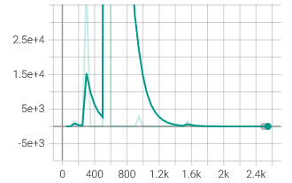
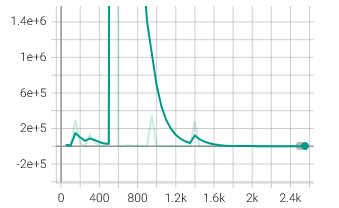
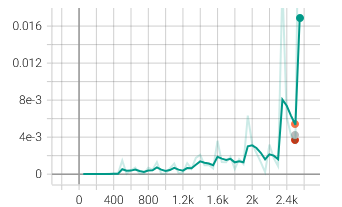
Audio Sample
Model 2
Trained on RAVE v3 with 500 padded 4-second samples for 4 hours. This model did not reach Phase 2, and the output was incomplete.
Loss Curves
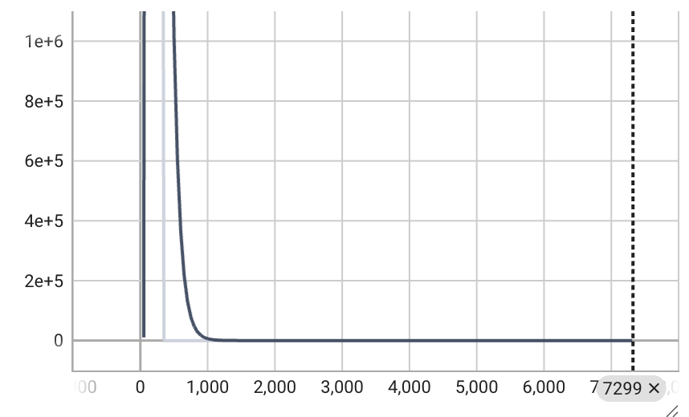
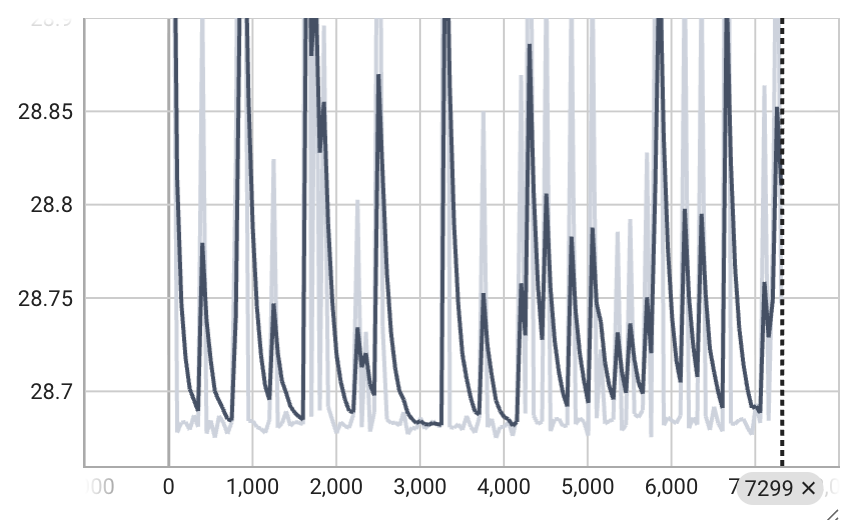
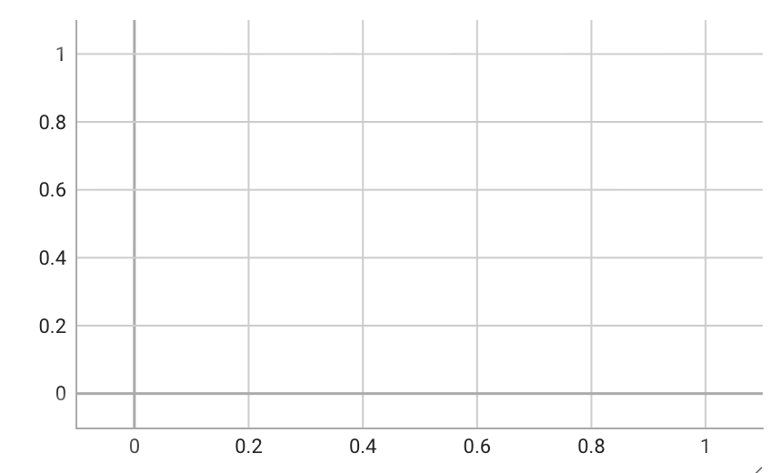
Model 3
This model can be broken down into 3 submodels saved at various stages of training. The main model was trained on RAVE v2_small with 500 padded 4-second samples.
Loss Curves
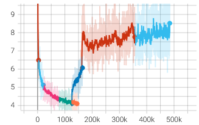
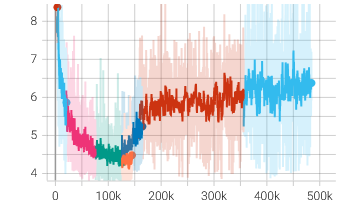
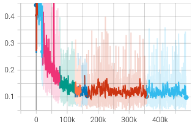
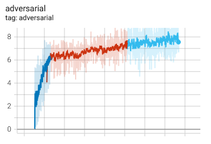
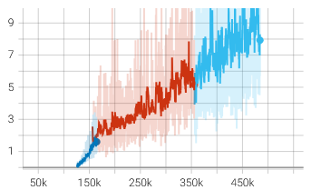
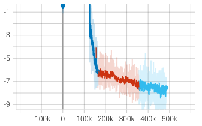
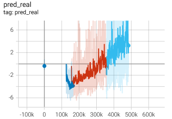
Model 3.0
Pulled at 3.75 hours of training. The loss converged. At this point, the electric snare sounded good, but the acoustic snare was still subpar.
Model 3.1
Pulled after another 4.5 hours of training from Model 3.0. It also converged, but did not reach Phase 2. The results were similar to Model 3.0 with somewhat better performance.
Audio Sample
Model 3.2
Pulled after another 5.25 hours of training from Model 3.1. This model reached Phase 2 after converging, but failed during GAN training. The output degenerated to a single sound where each snare sample had the same yield.
Model 4
Trained on RAVE v2_small with 10,000 samples. They were preprocessed into 500 files with 20 samples in each file. Each file was 30 seconds long. This model reached Phase 2 after convergence 7.5 hours of training. We stopped training after another 30 hours in Phase 2.
Loss Curves
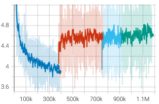
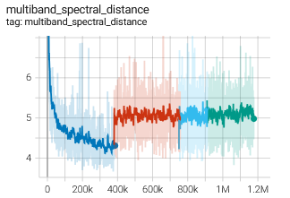
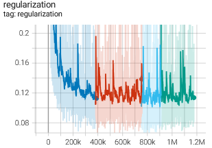
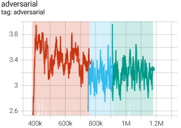
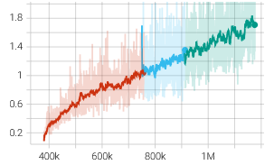
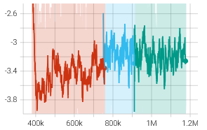
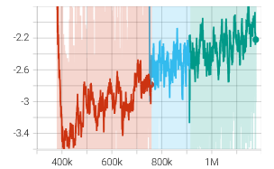
Audio Samples
Results
Statistics
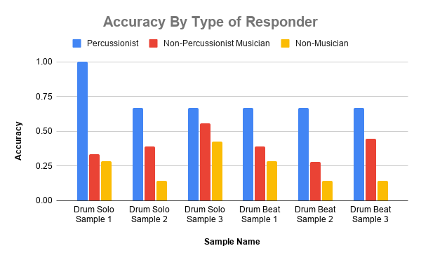
Of all responders:
- 9.1% thought the drum solo using real round-robin samples was using samples generated by our RAVE model.
- 36.4% thought the drum solo using samples generated by our RAVE model was using real round-robin samples.
- 30.3% thought the drum beat using samples generated by our RAVE model was using real round-robin samples.
- 21.2% thought the drum beat using real round-robin samples was using samples generated by our RAVE model.
Of all responders who correctly identified the sample without round-robins:
- 16.7% thought the drum solo using real round-robin samples was using samples generated by our RAVE model.
- 40.0% thought the drum beat using real round-robin samples was using samples generated by our RAVE model.
Overall, we found that the model performed well in some very specific situations, but completely failed in others. To be specific, the model performs best on very short snare drum sounds which have little to no ring. This usually lends it to creating variations on electronic snare drums, but tightly edited acoustic snare drums also sound very good. This makes sense, as nearly all of our dataset fits this description. However, even these situations are not perfect. Two main problems with the current model are reducing the transient (making the drum sound less “sharp”) and enhancing noise, which can range from a small nuisance to completely overtaking the sound.
The number one thing we would improve in the future is our variety of samples. If we could get a significant number of longer snare drum samples, we could train the model on these samples as well and likely get better performance on a wider variety of inputs.